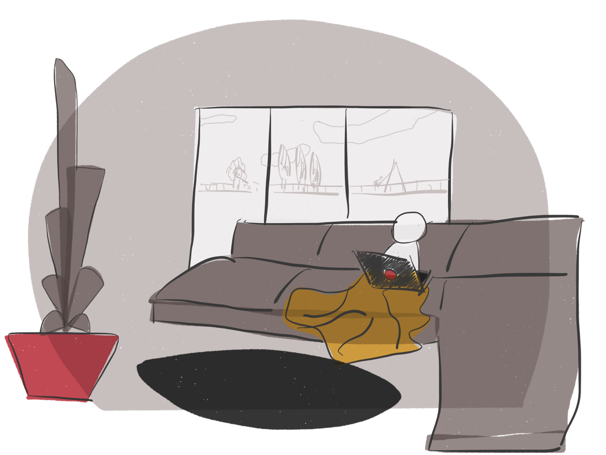

Working from home will affect your productivity

But is it for the better or worse? Well, it looks like it depends on who you’re asking…
During the past month or so, most people have been experiencing something for the first time ever: working from home. Sadly, what we have all been experiencing is something much more complex than just remote work.
Quarantine work !== Remote work
Scott Hanselman wrote it and that’s a very clear way of putting it.
After only a few weeks of working from home, friends, family and even co-workers, especially those with little kids, are praying for this whole situation to be over quickly so they can get out of home as they normally would. And although it’s understandable that parents are starting to burn out, the most interesting thing to me is that there are also non-parents that are completely fed up with this whole staying at home thing.
Of course the nature of the situation we’re in implies forced behaviour, and the result of that is often increased stress levels. Whether you’re a parent or not, you might suffer from this at some point. But it seems like not only parents are suffering from stress and boredom.
You know, as an introvert, I’ve always felt very comfortable at home.
Even right now, I’m not taking this as an imposed measure. I actually like this. And it doesn’t mean I don’t like to go out. Quite the opposite! I actually miss going out and driving through unknown places. But I’m also able to stay indoors for long periods of time. Currently, I have all sorts of ideas, fun projects and home fixes I would like to get my hands on—I’m far from getting bored of being at home.
It’s completely understandable that some people have different kinds of needs though. After all, we’re not all introverts.
For instance, I know two people who have developed similar symptoms over the quarantine-work-period. One of them is a family member and the other is a co-worker. They don’t know each other. But at some point, both considered going back to the usual office because they were feeling insane at home.
Feeling unproductive, distracting themselves with pretty much anything and even feeling some FOMO are some of the symptoms.
As of this Monday, one of them has been commuting to the office every day, even though he’s completely aware of what it means. The other took some time off.
Not everyone is able to pinpoint a source of stress, even though they might feel it. So if he was able to do it and it makes him feel better, it’s perfectly fine that he asks to go back to his usual office! With significantly less people than usual, but still the same desk, same monitor, same chair, same keyboard…
You know what else should be perfectly fine?
Asking to not go back to the office.
Let’s just flip the coin and see what’s on the other side.
Let’s say you actually feel more productive working from home.
Let’s say you feel less stressed when doing so.
Should it be any different?
Should you be forced to work in conditions you don’t feel comfortable with?
With constant interruptions, unpleasant lighting and thermal conditions and loud colleagues, just to name a few…
The good thing about remote work is that you have the option to work from whenever you want. If you don’t feel like working from home, you can go to a co-working space, a coffee shop down the street or even a natural park. As long as you have internet, you’ll be just fine. On the other hand, while on quarantine, we’re all forced to work from home. And that’s a significant difference.
When you’re forced to work in a specific environment, be it at home or in an office, you can imagine a lot of things can go wrong.
A couple of months ago I reached out to my manager and asked to work from home whenever I felt like not going to the office.
Does it surprise you if I tell you I got denied?
I was asked to keep going to the office as usual, with the already existing rare exceptions where I would be able to work from home—definitely not on a recurring basis.
Recently, a status report came in from the company management team. And isn’t it curious how the productivity levels have increased throughout all the office locations, ever since we started working from home? Even in this stressful situation!
I wish more employers would realise how much more the team could grow in satisfaction and loyalty when given the freedom to work wherever they want.
They’re all adults, there’s no need to keep an eye on your team. That’s only going to decrease trust levels, increase anxiety and make them produce low quality work. And I’m sure that an unhappy team and low quality work was not what you had in mind when you thought it would be a good idea to start a company.